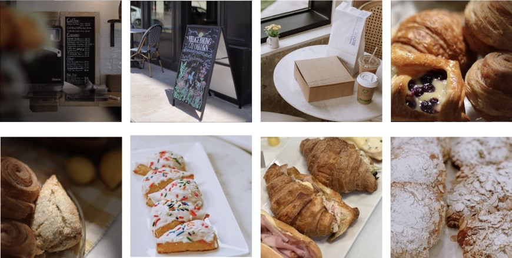

It seems so simple, yet the process, the love, the passion that goes into it is far from basic. Simple staples are turned into masterpieces. . . labors of love. The perfect combination, the perfect recipe, the perfect timing. Wholesome, warm, familiar. The rustic loaves, the flakiest of pastries, and the art of making it all by hand is absolutely glorious. With every hand crafted loaf, we are sharing our hearts with you all. We humbly thank each of you for embracing our passion and allowing us to serve you.
